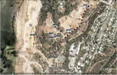
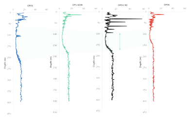
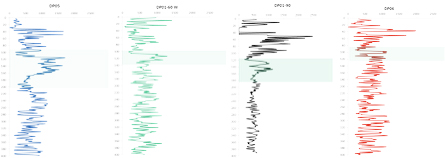
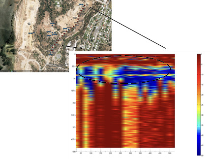
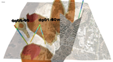

Atomic Dielectric Resonance
DET-CRC Downhole Test Site
Project aims
The principal aim of this project was to test Adrok’s ADR scanner against the drilled and well mapped sulphide body in the disused Brukunga mine site in Adelaide, South Australia. The ADR field survey was conducted in October 2012 on behalf of DET-CRC. DET-CRC is a research organisation involved with exploring new technologies in deep exploration, from drilling to new geophysical techniques as well as, finding safer ways to drill, analyse and target deep mineral deposits. Data for V-bores (virtual boreholes) as well as transect scans was collected. The individual objectives of this field survey were to identify the extent of sulphide body, to compare the ADR transect with the seismic survey transect and finally, to compare angled scans to vertical scans.
Exploration/Project challenges
The project challenge was to compare and match the results from the ADR survey with data of other geophysical techniques (e.g. seismic data), regarding the identification of the ore body.
Geological context
The Brukunga mine site, which was open between 1955 and 1972, is located in South Australia, 4km north of Nairne and 40km east of Adelaide in the Mount Lofty Ranges1. The mine was operated for the recovery of iron sulphide (pyrite and pyrrhotite), which was used for the production of sulphuric acid.
Elemental sulphur occurs naturally in salt domes, as deposits around volcanoes and within sedimentary beds2. Apart from salt dome cap rock deposits, sulphur is also produced from pyrite (iron sulphide, FeS2) as in the case of the Brukunga mine site2. Sulphuric acid, the major derivative of sulphur, is the most important inorganic chemical used in commerce, being widely used in the chemical and fertiliser industries2.
The ore body runs N-S, sub-vertical with slight dip to the east. The host rocks are Cambrian calc-siltstones (Nairne Pyrite member) lying within the north-south trending Kanmantoo Trough, the youngest sequence in the southern part of the Adelaide Geosynclin3.
The Kanmantoo Trough formed as a rapidly subsiding, fault-controlled rift basin during the last of several phases of major crustal extension that occurred along the Early to Middle Cambrian palaeo-Pacific margin of Gondwana. The dominantly siliciclastic sediments deposited in the Kanmantoo Trough crop out along the eastern Mount Lofty Ranges, through Fleurieu Peninsula and on Kangaroo Island4.
 Figure 1: Site overview & locations of Adrok’s V-bores (Google Earth).Adrok’s results
Promising results regarding the identification of the ore body were encountered on several of Adrok’s interpretation tools.
Distinct troughs in mean energy (E-Mean) of the returned ADR signal are possibly associated with the mineral zone. The difference in the broadness of the trough at each V-bore could indicate variation in sulphide body thickness. (Figure 2)
Weighted Mean Frequency (WMF) is characterized by similar trend lines at a specific depth range, that is, a change from low values to high and again, to low. Peaks or lows in WMF logs at this depth range could be related with the presence of the ore body. (Figure 3)
Very encouraging results came from the analysis of the transect scan. The transect image was created by combining together stationary scans (Stares) recorded at 25m intervals in a survey scan line of 500m. At each survey location the noise spectra was subtracted from the signal spectra. Then, the signals for each station were combined together to form the final image (Figure 4). As shown on Figure 4, the broad target area is characterized by low values in signal energy in contrast to the high values of the surrounding area. This leads to the conclusion that potentially the mineral body has been detected in signal energy.
The chosen areas of interest based on the mean energy (E-Mean) graphs were further analysed by conducting spectral lines analysis.
At survey sites DP01-60w and DP06, highest portion of direct matches between extracted spectral lines and fundamental harmonics of known spectral lines of pyrite and pyrrhotite occur within the individual E-Mean troughs, approximately between the depths 100m and 150m.
The detailed spectral line analysis from 50m to 250m on V-bore DP05-90 suggests one possible zone of interest for pyrite and pyrrhotite from 70m to 130m depth. On V-bore DP01-90 it is suggested a possible zone of interest for pyrrhotite at 120-140m depth and multiple zones for pyrite between 130m and 200m. However, spectral lines analysis was conducted beyond the zones of interest and showed that in V-bore DP05-90 there is an additional deeper zone of pyrrhotite at 300-400m depth and, in V-bore DP01-90 one deeper zone of pyrite at 200-300m and zones of pyrrhotite between 300m and 400m.
 Figure 2: Graphs of mean energy (E-Mean) in four V-bores.  Figure 3: Graphs of Weighted Mean Frequency (WMF) showing the areas of interest.  Figure 4: Possible mineral body has been detected in signal-energy image of the transect scan.Benefits for client
The ADR signal penetrated down to 1000m of solid rock and Adrok can presumably identify the broad mineral body by low energy values in signal energy.
Project outcomes
This project resulted in an important case study as many metallic minerals are associated with sulphide minerals and also, it was presented at November 2013 DET-CRC conference. At the conference the results were presented in a 3D model constructed by inverted magnetic isosurfaces and Google Earth Imagery, seismic data and ADR V-bores targeting the sulphide mineralisation (Figure 5).
 Figure 5: 3D model showing the mean energy (E-Mean) logs of two survey sites plotted along with seismic data and inverted magnetic isosurfaces.